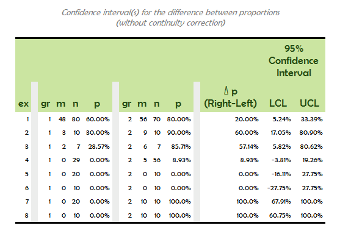

|
Version 1.0 (October 2016)
SAS macro %ProportionsDiffCIsNewcombe
Confidence interval(s) for difference between independent proportions
Syntax
%ProportionsDiffCIsNewcombe(dsCellCounts, class, num, denom, rows=, level=0.95, where=, colsepcolor=GWH, f=percent8.2, difffmt=percentn8.2, continuityCorrection=1, titleno=1);
%ProportionsDiffCIsNewcombe arguments list
Reference
The macro ProportionsDiffCIsNewcombe is based on the methods 10 and 11 presented in Newcombe's paper: Newcombe, Robert G. Interval Estimation for the Difference Between Independent Proportions: Comparison of Eleven Methods, Statistics in Medicine, 17, 873-890 (1998). Example
Below is an example of a call to %ProportionsDiffCIsNewcombe followed by its output. It reproduces the results found in Table II of Newcombe's paper (above) for method 10.
data examples;
input ex gr m n; cards; 1 2 56 70 1 1 48 80 2 2 9 10 2 1 3 10 3 2 6 7 3 1 2 7 4 2 5 56 4 1 0 29 5 2 0 10 5 1 0 20 6 2 0 10 6 1 0 10 7 2 10 10 7 1 0 20 8 2 10 10 8 1 0 10 ; run; %ProportionsDiffCIsNewcombe(examples, gr, m, n, rows=ex, continuityCorrection=0);  Code
%macro ProportionsDiffCIsNewcombe(dsCellCounts, class, num, denom, rows=, level=0.95, where=, colsepcolor=GWH, f=percent8.2, difffmt=percentn8.2, continuityCorrection=1, titleno=1);
%local dsCIs dsTmp; %local alpha level100 prefix z; %local gr0 gr1; %local i nrowvars rowvar; %local delta; %local title2 titleno2; * Note: where= can be used to select the two groups to be compared: by default, min & max group will be compared; /* Source: Newcombe, Robert G. "Interval Estimation for the Difference Between Independent Proportions: Comparison of Eleven Methods", Statistics in Medicine, 17, 873-890 (1998). https://pdfs.semanticscholar.org/370b/92bc4f61fedfa64e1b50e7a10c7a6dde0a19.pdf [ method 10 / Score, not Continuity Correction when continuityCorrection = 0, method 11 / Score, Continuity Correction when continuityCorrection = 1] */ ods escapechar="^"; %let z = probit((1+&level)/2); %let level100 = %sysevalf(100*&level); %let delta= ^{unicode 0394}; %let titleno2 = %eval(&titleno+1); %if &continuityCorrection eq 1 %then %do; %let alpha = 1; %let title2 = ("with continuity correction)"; %end; %else %do; %let alpha = 0; %let title2 = ("without continuity correction)"; %end; proc sql noprint; select min(&class), max(&class) into :gr0, :gr1 from &dsCellCounts; quit; %if &gr0 eq &gr1 %then %put ERROR: class variable must take (at least) two different values; %DefineSafeVarPrefix(prefix, &dsCellCounts); %let dsTmp = %NewDatasetName(tmp); proc sql; create table &dsTmp as select %commasep(&rows &class &num &denom), &num/&denom as &prefix.p, 1 + &z*&z/&denom as &prefix.A, -2*(calculated &prefix.p) - (&z*&z + &alpha)/&denom as &prefix.BU, -2*(calculated &prefix.p) - (&z*&z - &alpha)/&denom as &prefix.BL, (calculated &prefix.p + &alpha/(2*&denom))**2 as &prefix.CU, (calculated &prefix.p - &alpha/(2*&denom))**2 as &prefix.CL, sqrt((calculated &prefix.BU)**2-4*(calculated &prefix.A)*(calculated &prefix.CU)) as &prefix.DeltaU, sqrt((calculated &prefix.BL)**2-4*(calculated &prefix.A)*(calculated &prefix.CL)) as &prefix.DeltaL, (-(calculated &prefix.BU)-(calculated &prefix.DeltaU))/(2*(calculated &prefix.A)) as &prefix.USoln1a, (-(calculated &prefix.BU)+(calculated &prefix.DeltaU))/(2*(calculated &prefix.A)) as &prefix.USoln2a, (-(calculated &prefix.BL)-(calculated &prefix.DeltaL))/(2*(calculated &prefix.A)) as &prefix.LSoln1a, (-(calculated &prefix.BL)+(calculated &prefix.DeltaL))/(2*(calculated &prefix.A)) as &prefix.LSoln2a, ifn(calculated &prefix.USoln1a ge calculated &prefix.p and abs(calculated &prefix.USoln1a - calculated &prefix.p) - &alpha/(2*&denom) ge 0, calculated &prefix.USoln1a, .) as &prefix.USoln1b, ifn(calculated &prefix.USoln2a ge calculated &prefix.p and abs(calculated &prefix.USoln2a - calculated &prefix.p) - &alpha/(2*&denom) ge 0, calculated &prefix.USoln2a, .) as &prefix.USoln2b, ifn(calculated &prefix.LSoln1a le calculated &prefix.p and abs(calculated &prefix.LSoln1a - calculated &prefix.p) - &alpha/(2*&denom) ge 0, calculated &prefix.LSoln1a, .) as &prefix.LSoln1b, ifn(calculated &prefix.LSoln2a le calculated &prefix.p and abs(calculated &prefix.LSoln2a - calculated &prefix.p) - &alpha/(2*&denom) ge 0, calculated &prefix.LSoln2a, .) as &prefix.LSoln2b, coalesce(calculated &prefix.USoln2b, calculated &prefix.USoln1b, 1) as &prefix.USoln, coalesce(calculated &prefix.LSoln2b, calculated &prefix.LSoln1b, 0) as &prefix.LSoln from &dsCellCounts where &class in (&gr0, &gr1); quit; %let dsCIs = %NewDatasetName(cis); proc sql; create table &dsCIs as select %if %length(%superq(rows)) %then %do; %commasep4sql(a, &rows), . as &prefix.i, %end; a.&class as &prefix.gr0, a.&num as &prefix.m0, a.&denom as &prefix.n0, a.&prefix.p as &prefix.p0, . as &prefix.j, b.&class as &prefix.gr1, b.&num as &prefix.m1, b.&denom as &prefix.n1, b.&prefix.p as &prefix.p1, . as &prefix.k, b.&prefix.p - a.&prefix.p as &prefix.pDiff, sqrt((b.&prefix.p-b.&prefix.LSoln)**2 + (a.&prefix.p-a.&prefix.USoln)**2) as &prefix.delta, sqrt((b.&prefix.p-b.&prefix.USoln)**2 + (a.&prefix.p-a.&prefix.LSoln)**2) as &prefix.epsilon, (calculated &prefix.pDiff) - calculated &prefix.delta as &prefix.LCL, (calculated &prefix.pDiff) + calculated &prefix.epsilon as &prefix.UCL from (select %commasep(&rows &class &prefix.p &num &denom &prefix.LSoln &prefix.USoln) from &dsTmp where &class eq &gr0) as a, (select %commasep(&rows &class &prefix.p &num &denom &prefix.LSoln &prefix.USoln) from &dsTmp where &class eq &gr1) as b %if %length(%superq(rows)) %then %do; where %matching(a b, &rows) order &rows %end; ; quit; title&titleno "Confidence interval(s) for the difference between proportions"; title&titleno2 &title2; %if %length(%superq(rows)) %then %let nrowvars = %ntokens(&rows); proc report data=&dsCIs nofs style={rules=none cellspacing=0} nowd headskip headline missing split="*"; column &rows %if %length(%superq(rows)) %then %do; &prefix.i %end; &prefix.gr0 &prefix.m0 &prefix.n0 &prefix.p0 &prefix.j &prefix.gr1 &prefix.m1 &prefix.n1 &prefix.p1 &prefix.k &prefix.pDiff ("-&level100.% Confidence Interval-" &prefix.LCL &prefix.UCL); %if %length(%superq(rows)) %then %do; %do i = 1 %to &nrowvars; %let rowvar = %scan(&rows, &i); define &rowvar / group order=data; %end; define &prefix.i / analysis mean style={foreground=&colsepcolor background=&colsepcolor cellwidth=1pt font_size=1}; %end; define &prefix.gr0 / group "&class"; define &prefix.m0 / analysis mean "m"; define &prefix.n0 / analysis mean "n"; define &prefix.p0 / analysis mean "p" f=&f; define &prefix.j / analysis mean style={foreground=&colsepcolor background=&colsepcolor cellwidth=1pt font_size=1}; define &prefix.gr1 / group "&class"; define &prefix.m1 / analysis mean "m"; define &prefix.n1 / analysis mean "n"; define &prefix.p1 / analysis mean "p" f=&f; define &prefix.k / analysis mean style={foreground=&colsepcolor background=&colsepcolor cellwidth=1pt font_size=1}; define &prefix.pDiff / analysis mean "&delta p*(Right-Left)" f=&difffmt; define &prefix.LCL / analysis mean "LCL" f=&difffmt ; define &prefix.UCL / analysis mean "UCL" f=&difffmt ; run; title&titleno; proc datasets nolist; delete &dsCIs &dsTmp; quit; %mend ProportionsDiffCIsNewcombe; /* completed by the following 8 macros: commasep commasep4sql DefineSafeVarPrefix matching MultiAppend NewDatasetName ntokens Touch */ %macro commasep(lov); %sysfunc(tranwrd(%Qsysfunc(compbl(%sysfunc(strip(&lov)))), %str( ), %str(, ))) %mend commasep; %macro commasep4sql(datasetindex, lov); &datasetindex..%sysfunc(tranwrd(%Qsysfunc(compbl(%sysfunc(strip(&lov)))), %str( ), %str(, &datasetindex..))) %mend commasep4sql; %macro DefineSafeVarPrefix(outprefix, datasets, errorLength=11); %local dsContents dsContents0 dsTmp dsUnavailablePrefixes; %local d nds nvarnames tmpds tmpprefix ; %local i j k; %local files2append; %let nds = %ntokens(&datasets); %do d = 1 %to &nds; %let tmpds = %scan(&datasets, &d, %str( )); %let dsContents = %NewDatasetName(contents); proc contents data=&tmpds out=&dsContents (keep=name) noprint; run; %let files2append=&files2append &dsContents; %end; %let dsContents0 = %NewDatasetName(contents0); %MultiAppend(&dsContents0, &files2append); %let dsContents = %NewDatasetName(contents); proc sql; create table &dsContents as select distinct(name) from &dsContents0; quit; proc sql noprint; select N(name) into :nvarnames from &dsContents; quit; * find the maximum length for safe prefix; %let j = %eval(1 + %sysfunc(floor(%sysevalf(%sysfunc(log(&nvarnames))/%sysfunc(log(27)))))); %let dsTmp = %NewDatasetName(tmp); data &dsTmp; %do i = 1 %to &j; a&i = 0; %end; output; run; data &dsTmp (keep=l varp); set &dsTmp; length varp $ &j; array a{*} a1-a&j; do l = 1 to &j; kmax = 27**l; do k = 1 to kmax; varp = ""; do j = 1 to l; a{j} = mod(floor((k-1)/(27**(j-1))), 27) + 1; varp = cats(varp, substr("_abcdefghijklmnopqrstuvwxyz", a{j}, 1)); end; output; end; end; run; * List prefixes already present in at least one variable name; %let dsUnavailablePrefixes = %NewDatasetName(unavailablepref); data &dsUnavailablePrefixes (drop=name l); set &dsContents; length varp $ &j; do l = 1 to &j; varp = substr(name, 1, l); output; end; run; proc sort data=&dsUnavailablePrefixes; by varp; run; data &dsUnavailablePrefixes; set &dsUnavailablePrefixes; by varp; if first.varp; run; proc sort data=&dsTmp; by varp; run; data &dsTmp; merge &dsTmp (in=in1) &dsUnavailablePrefixes (in=in2); by varp; if in1 and not in2; run; proc sort data=&dsTmp; by l varp; run; data &dsTmp; set &dsTmp (obs=1); run; proc sql noprint; select l into :lprefix from &dsTmp; quit; data &dsTmp; length varp $&lprefix; set &dsTmp; run; proc sql noprint; select varp into :&outprefix from &dsTmp; quit; %if &lprefix >= &errorLength %then %do; %let lprefix = %sysfunc(compress(&lprefix)); %put ERROR: safe prefix is of length (&lprefix) greater or equal than that prescribed by errorLength (&errorLength); %end; proc datasets nolist; delete &dsContents0 &dsContents &dsTmp &dsUnavailablePrefixes; run; %mend DefineSafeVarPrefix; %macro matching(dsIndices, matchingvars); %local d ds ds1 nds; %local nvars v var; %let nvars = %ntokens(&matchingvars); %let nds = %ntokens(&dsIndices); %let ds1 = %scan(&dsIndices, 1); %do v = 1 %to &nvars; %let var = %scan(&matchingvars, &v); %do d = 2 %to &nds; %let ds = %scan(&dsIndices, &d); %if &v gt 1 or &d gt 2 %then %do; and %end; &ds1..&var eq &ds..&var %end; %end; %mend matching; %macro MultiAppend(dsOut, datasets, clean=1, fileindex=); %local dsCaseCount dsContents dsContentsAll dsNonMissing dsTmp dsTmpContents dsVarsDescription; %local d ds nds; %local nvars nvars0 varnames varnames0 varlens vartypes; %local lens0 types0 varsfound0; %local v varin varlen varlen0 varname vartype vartype0; %local nnonmissing nnonmissing0; %Touch(&dsOut); %let dsContents = %NewDatasetName(contents); %let dsContentsAll = %NewDatasetName(contentsall); %let dsTmpContents = %NewDatasetName(tmpcontents); %let nds = %ntokens(&datasets); %do d = 1 %to &nds; %let ds = %scan(&datasets, &d, %str( )); proc contents data=&ds noprint out=&dsContents (keep=name type length varnum); run; proc sql; create table &dsTmpContents as select *, lowcase(name) as lcname, &d as FileIndex from &dsContents; quit; %if &d eq 1 %then %do; proc datasets nolist; change &dsTmpContents=&dsContentsAll; delete &dsContents; quit; %end; %else %do; proc datasets nolist; append data=&dsTmpContents base=&dsContentsAll; delete &dsContents &dsTmpContents; quit; %end; %end; %let dsVarsDescription = %NewDatasetName(varsdesc); proc sql number; create table &dsVarsDescription as select lcname, max(type) as type, max(type) eq min(type) as typeConsistent, max(length) as len, min(length) as minLen, max(length) eq min(length) as lenConsistent, min(FileIndex) as FileIndex, N(lcname) as NFiles, (calculated NFiles) eq &nds as InEachds from &dsContentsAll group lcname order lcname; quit; proc sql noprint; select (sum(typeConsistent) eq N(lcname)) * (sum(lenConsistent) eq N(lcname)) * (sum(InEachds) eq N(lcname)), N(lcname) into :filesConsistent, :nvars from &dsVarsDescription; quit; * Get Variable Names with most frequent case; %let dsCaseCount = %NewDatasetName(casecount); proc sql; create table &dsCaseCount as select lcname, name, N(name) as f from &dsContentsAll group lcname, name order lcname, calculated f descending; quit; data &dsCaseCount; set &dsCaseCount; by lcname; if first.lcname; run; %let dsTmp = %NewDatasetName(tmp); proc sql; create table &dsTmp as select v.*, k.name from &dsVarsDescription as v, &dsCaseCount as k where v.lcname eq k.lcname; quit; proc datasets nolist; delete &dsCaseCount &dsVarsDescription; change &dsTmp=&dsVarsDescription; quit; * Save variable names/types/lens to macro variables; proc sql noprint; select name, len, type, N(name) into :varnames separated by ' ', :varlens separated by ' ', :vartypes separated by ' ', :nvars from &dsVarsDescription order lcname; quit; %let dsNonMissing = %NewDatasetName(nonmissing); * Append files; %do d = 1 %to &nds; %let ds = %scan(&datasets, &d, %str( )); * Count the number of non-missing values for each variable; proc sql noprint; select lcname, N(lcname) into :varnames0 separated by ' ', :nvars0 from &dsContentsAll where FileIndex eq &d; quit; proc sql; create table &dsNonMissing as %do v = 1 %to &nvars0; %let varname = %scan(&varnames0, &v); %if &v gt 1 %then %do; outer union corresponding %end; select "&varname" as lcname length=32, sum(not missing(&varname)) as NNonMissing from &ds %end; ; quit; proc sql; create table &dsTmp as select v.name, v.type, c.type as TypeInThisFile, c.lcname is not null as VarFoundInThisFile, c.length as LenInThisFile, coalesce(c.NNonMissing, 0) as NNonMissing from &dsVarsDescription as v left join (select a.*, m.NNonMissing from &dsContentsAll as a, &dsNonMissing as m where a.lcname eq m.lcname and a.FileIndex eq &d) as c on v.lcname eq c.lcname order v.lcname; quit; proc sql noprint; select TypeInThisFile, VarFoundInThisFile, LenInThisFile, NNonMissing into :types0 separated by ' ', :varsfound0 separated by ' ', :lens0 separated by ' ', :nnonmissing separated by ' ' from &dsTmp; quit; proc datasets nolist; delete &dsNonMissing &dsTmp; quit; proc sql; create table &dsTmp as select %do v = 1 %to &nvars; %let varname = %scan(&varnames, &v); %let varlen = %scan(&varlens, &v); %let vartype = %scan(&vartypes, &v); %let varin = %scan(&varsfound0, &v); %let vartype0 = %scan(&types0, &v, %str( )); %let varlen0 = %scan(&lens0, &v, %str( )); %if &v ne 1 %then %do; , %end; %if &varin %then %do; %if &vartype0 ne &vartype %then %do; %let nnonmissing0 = %scan(&nnonmissing, &v); %if &nnonmissing0 eq 0 %then %do; "" as &varname length=&varlen %end; %else %if &varlen le 32 %then %do; put(&varname, best&varlen..) as &varname %end; %else %do; put(&varname, best32.) as &varname %end; %end; %else %do; &varname length=&varlen %end; %end; %else %do; %if &vartype eq 1 %then %do; . as &varname length=&varlen %end; %else %if &vartype eq 2 %then %do; "" as &varname length=&varlen %end; %end; %end; %if %length(%superq(fileindex)) %then %do; , &d as &fileindex %end; from &ds; quit; %if &d eq 1 %then %do; proc datasets nolist; delete &dsOut; change &dsTmp=&dsOut; quit; %end; %else %do; proc datasets nolist; append data=&dsTmp base=&dsOut; delete &dsTmp; quit; %end; %end; %if &clean %then %do; proc datasets nolist; delete &datasets; quit; %end; proc datasets nolist; delete &dsContentsAll &dsVarsDescription; quit; %mend MultiAppend; %macro NewDatasetName(proposalname); %*Finds the first unused dataset named *datasetname*, adding a leading underscore and a numeric suffix as large as necessary to make it unique!; %local i newdatasetname; %let proposalname=%sysfunc(compress(&proposalname)); %let newdatasetname=_&proposalname; %do %while(%sysfunc(exist(&newdatasetname))); %let i = %eval(&i+1); %let newdatasetname=_&proposalname&i; %end; &newdatasetname %mend NewDatasetName; %macro ntokens(list); %eval(1 + %length(%sysfunc(compbl(&list))) - %length(%sysfunc(compress(&list)))) %mend ntokens; %macro Touch(newfiles); %local f file nfiles; %let nfiles = %ntokens(&newfiles); %do f = 1 %to &nfiles; %let file = %scan(&newfiles, &f, %str( )); data &file; stop; run; %end; %mend Touch; |